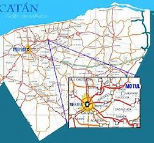
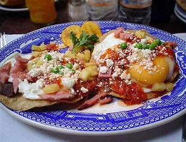
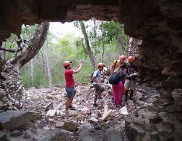

IR AL MENU
La iglesia motul con 372 años , cuativa a los visitantes del pueblo magico:

La iglesia Motul de San Juan Bautista, es una edificacion Franciscana
del siglo xvI que llama la atencion por su estilo similar a la de
catedral de San Idelfonso que esta situada en la ciudad de merida. En
este sentido, con el paso del tiempo el templohan sido uno de los
atractivos turisticos mas destacados em este pueblo magico, ubicado en
litoral centro. De acuerdo con datos historicos, en 1567 la parroquia
comenzo a ser levantada con piedras enormes en el centro de la ciudad,
sus paredes eran gruesas y con estrechos corredores. La construccion
concluyo en 1651 cuando por fin lucio terminada su fachada de
estilo clasista
¿PORQUE SE LE LLAMO PUEBLO MAGICO A MOTUL?
Es una localidad que tiene atributos, simbolicos, leyendas, historia,
hechos trascendentes, cotitianidad. Motul exixte desde mucho antes que
casi cualquier lugar en yucatan, su pasado maya reverbera en el
orgulloque su gente siendo por la cultura se complementa con las joyas
que permanecen del periodo colonial, entre las que se encuentran una de
las iglesias mas antiguas de la peninsula. Sus ex haciendas cuentan
historias de un glorioso y prospero pasado. Recorrerlas es volver a
vivir una epoca de oro para el pueblo en el norte de yucatan. Tambien
famoso por sus deliciosos huevos motuleños, por ser cuna de caudillo
Felipe Carrillo Puerto y por haber sido centro de la industria
henequenera de Yucatan.
"EL MOTIVO POR LA CUAL FUE CONSTRUIDO"
Templo y ex convento de San Juan Bautista
- Fue construido entre el mediados del siglo xxl y principios del siglo xvll, unos de los mas antiguos de la peninsula.
- Levantando por el orden de los Franciscanos posee una arquitectura sobria y austera, pero a la vez elegante.
- En su interior hay una rueda calendarica dividido en ocho
secciones, la cual era utilizado por los pueblos mayas para la
observacion de las estrellas. Tal vez sea un caso unico de
incorporacion como esta tecnica en un edificio catolico.
LA MEJOR EXPERIENCIA QUE PUEDES VIVIR EN MOTUL
- Visitar el Museo de Felipe Carrillo Puerto, en donde podras conocer mas acerca de la historia de motul y la vida de este legendario exgobernador y defensor de la lengua maya.
- Echarte un chapuzon en el refrescante cenote Sambula.
- Pasear y descansar en el parque Jose Maria Campos, corazon del pueblo.
- Visitar las ex haciendas cercanas de Kancabchen, San Jose Hili, Ticopo Gutierrez y paraiso Komchen. Cada una de estas haciendas cuentan un pedfazo de la historia henequel de motul
UBICACION

Motul es un munipio ubicado en la region del estado de Yucatan, Mexico, ubicado en el centro norte unos 42km al oriente de Merida la capital del estado.
LA GASTRONOMIA DE MOTUL
EL ORIGEN DE LOS HUEVOS MOTULEÑOS

EL ORIGEN DE LOS HUEVOS MOTULEÑOS:
En el año 1924 el entonces gobernador
Felipe Carrillo Puerto emprendio un viaje junto con grandes
representantes de la cultura y arte mexicana. Visitando los precios
lugares de yucatan, llegaron a un restaurante de motul para comer ahi.
El chef Jorge Siqueff se percato de que no tenia suficientes platos y
decidio colocar en uno solo las tortillas, huevo, salsa, chicharos y
los platanos fritos a si lo sirvio al centro de la mesa. Al terminar de
comer el gobernador y sus representantes quedaron encantados con el
platillo, que por lo segun que la leyenda Vasconcelos pregunto el
nombre del mismo y gobernador respondio: son los autenticos huevos
motuleños.
Los huevos motuleños son parte de la
historia de Yucatan y de Mexico, el mercado se sirve a diario este
platillo, son la salsa de tomate, los chicharos, y el queso rayado, los
platanos fritis son los que logran una mezcla deliciosa de sabores eso
hace los huegvos motuleños un platillo importante de la gastronomia
Yucateca.
CENOTES:

CENOTE SAMBULA:
Es un cenote
tipo cerrado, de gruta para acceder al agua, se desciende por una
escalera de mamposteria hasta un espacio salom iluminado con energia
electrico. El agua es cristalina y el espejo de agua mide 30 metros de
largo y 8 de ancho y una profundidad minima de un metro y maximo de 8.
El sitio es administrado por el H. Ayundamiento que cuida y proporciona
el mantenimiento a las instalaciones cobrando u a modica cuota de
recuperacion. la gruta mide 8 metros de ancho por largo son 40 y
3 metros der slto en promedio. Es un sitio bueno para andar se cuenta
con la preparacion adecuada ya que cuenta con una cueva subacuatica con
restrcciones considerables, donde el sedimento es muy volatil.
Se recomienda el uso de chalecos
salvavidas, evitar el uso de bloqueadores solares y repelentes para
insectos y no dejar basura en el interior del sitio.
visitanos en nuestro bello pueblo magico motul, no te quedes sin las ganas de disfrutar la gastronomia y zonas arqueologicas.
¡gracias!